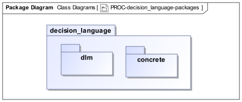
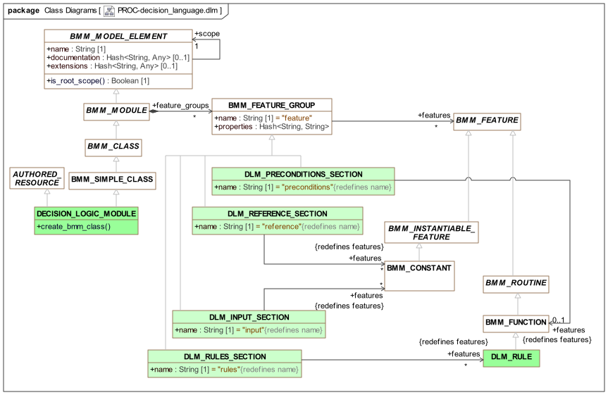
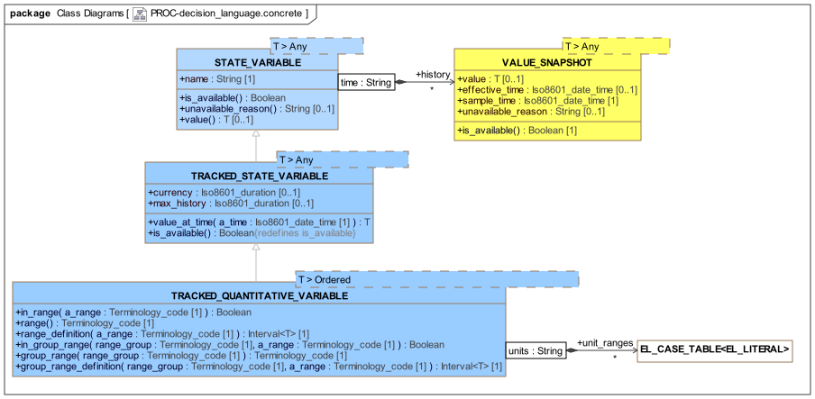

DLM Model
Overview
The structure of the proc.decision_language packages is shown below.

proc.decision_language Package strucureThe packages are described below.
Decision Logic Module Package
The module structure of a Decision Logic Module is formally represented by a class model consisting of minimal extensions to the BMM class (i.e. BMM_CLASS) concept. A DLM is thus understood as a special kind of module expressible as a constrained form of class definition, such that only certain types of features are allowed. It also has additions for documentary meta-data and terminology provided by the AUTHORED_RESOURCE class from the openEHR BASE component.
The meta-model is shown below, with the meta-class DECISION_LOGIC_MODULE being the root entity.

proc.decision_language.dlm PackageWithin this model, the various DLM sections are modelled as specialisations of the BMM meta-class BMM_FEATURE_GROUP, so as to restrict the kind of features they may define. These are described in the following sub-sections.
Pre-conditions Section
The DLM preconditions section is formally represented as a feature group called 'preconditions' whose members are limited to being a single BMM_FUNCTION containing the Boolean expression that appears in that section. The expression may reference only rules and input variables.
Reference Section
The DLM reference section is formally represented as a feature group called 'reference' whose members are limited to BMM constants.
Input Section
The DLM input section is formally represented as a feature group called 'input' whose members are limited to BMM constants of a specific concrete type TRACKED_VARIABLE<T> and descendants, supplied by the proc.decision_language.concrete package.
Rules Section
The DLM rules section is formally represented as a feature group called 'rules' whose members are limited to BMM functions. A specific meta-type DLM_RULE is used in case extensions to the standard BMM_FUNCTION are required.
Class Descriptions
Unresolved include directive in modules/decision_language/pages/dlm_model.adoc - include::ROOT:partial$classes/decision_logic_module.adoc[] Unresolved include directive in modules/decision_language/pages/dlm_model.adoc - include::ROOT:partial$classes/dlm_reference_section.adoc[] Unresolved include directive in modules/decision_language/pages/dlm_model.adoc - include::ROOT:partial$classes/dlm_input_section.adoc[] Unresolved include directive in modules/decision_language/pages/dlm_model.adoc - include::ROOT:partial$classes/dlm_rules_section.adoc[] Unresolved include directive in modules/decision_language/pages/dlm_model.adoc - include::ROOT:partial$classes/dlm_rule.adoc[]
DLM Concrete Model
In order to supply a few of the key constructs of a DLM, a concrete model is provided with specific types that express the needed semantics. The main types required relate to input variables. The DLM concrete model UML is shown below.

proc.decision_language.concrete PackageSubject Variables
The variable definitions found in the input section of a DLM are designed to facilitate both intuitive DLM authoring and tracking of values over time from real data sources, typically health records, devices and so on. The generic class STATE_VARIABLE<T> and descendants provide a representation of a subject variable with a symbolic name. The generic type parameter is substituted with types used for representing atomic data values, including primitive types such as String, Integer etc, as well as types like Terminology_code, Quantity etc, as available in the models (type definitions) used by a DLM.
The class STATE_VARIABLE<T> models the simplest case: a variable that may be queried once for an execution run. This is sufficient for subject variables that are not time-dependent, and will not change during the execution, such as date_of_birth, sex, and Boolean variables such as is_type1_diabetic. The history attribute contains the variable value (normally only one sample), while the features is_available() and unavailable_reason() provide a way for missing data to be checked for.
For time-varying variables, the values must usually be tracked. The class TRACKED_STATE_VARIABLE<T> is is provided for this purpose, and adds the meta-attribute currency, a duration indicating the maximum age of the sample value to be useful or valid. The history attribute now contains variable samples over time. The function value() extracts the most recent available value, while is_available() is redefined to indicate whether a sufficiently recent value is available.
Many tracked variables are quantitative, and for these, extra facilities are provided via the class TRACKED_QUANTITATIVE_VARIABLE<T>, which adds the ranges facility described earlier in [_quantitative_tracked_variables].
Variable declarations in DL syntax, as described in the language section above are in fact instantiations of the STATE_VARIABLE<T> or a descendant, potentially with constructor paramaters supplied. Consider the following declaration, shown earlier:
systolic_blood_pressure: Quantity
currency = 1 min,
ranges["mm[Hg]"] =
--------------------------------
|≥180|: [critical_high],
|>140|: [very_high],
|>120|: [high],
|>90..≤120|: [normal],
|≤90|: [low],
|≤50|: [critical_low]
--------------------------------
;If we were to rewrite this in a more standard programming language, it might look like the following object instantiation, preceded by setup code (the syntax 'Type_name (args)' is used to represent an object creation using a constructor call in each case):
// build the ranges Map
ranges: Map <Terminology_code, Interval<Quantity> ();
ranges.put (Terminology_code("critical_high"), Interval<Quantity>(180 mm[Hg], Void);
...
ranges.put (Terminology_code("critical_low"), Interval<Quantity>(Void, 50 mm[Hg]);
// instantiate the tracked variable object
systolic_blood_pressure: TRACKED_QUANTITATIVE_VARIABLE<Quantity> (
"systolic_blood_pressure", // name
"PT1M", // currency
ranges // ranges
);It will be appreciated that this is substantially more complex, and also arcane to a domain specialist. In the above, the part between the parentheses in the lower declaration corresponds to a call to a constructor of type TRACKED_QUANTITATIVE_VARIABLE with the signature (name: String, currency: Iso8601_duration, ranges: Map<Terminology_code, Interval<T>). From a formal point of view, such an instantiation creates an instance that will remain for the life of the DLM’s execution, in other words, a computed constant value. It is thus a meta-instance of the BMM meta-type BMM_CONSTANT, as shown in the DLM model above.
Each input variable declaration creates an object similar to the above, which may then be used during the execution of the DLM by calls made from the functions in the rules section. The simplest possible 'bare' reference of the variable name alone, i.e. systolic_blood_pressure in the example above, makes use of the default delegate feature of the BMM (BMM_FUNCTION) to invoke the value() function, avoiding the need to write systolic_blood_pressure.value(). However, all the features defined on TRACKED_VARIABLE and its descendants are indeed available for use in DLM code if needed. Thus, systolic_blood_pressure.in_range([high]) is a normal call on the systolic_blood_pressure instance of TRACKED_QUANTITATIVE_VARIABLE<Quantity>.
TO BE CONTINUED
Class Descriptions
Unresolved include directive in modules/decision_language/pages/dlm_model.adoc - include::ROOT:partial$classes/state_variable.adoc[] Unresolved include directive in modules/decision_language/pages/dlm_model.adoc - include::ROOT:partial$classes/value_snapshot.adoc[] Unresolved include directive in modules/decision_language/pages/dlm_model.adoc - include::ROOT:partial$classes/tracked_state_variable.adoc[] Unresolved include directive in modules/decision_language/pages/dlm_model.adoc - include::ROOT:partial$classes/tracked_quantitative_variable.adoc[]